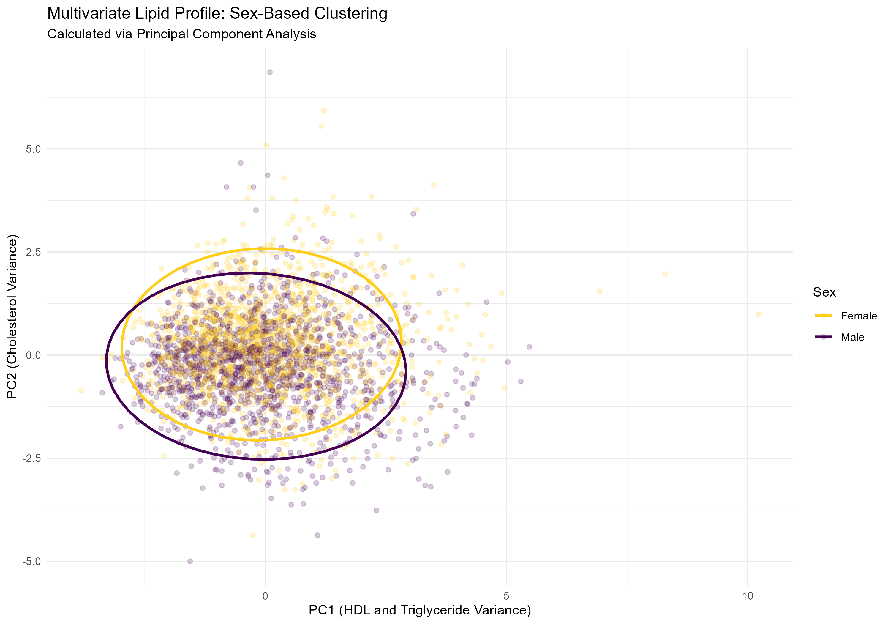

I combine biomedical knowledge with computational analysis in R, statistical modelling, and metabolic physiology, with a growing focus on analytical science and the molecular mechanisms of disease.
# Load Dataset & Clean Column Names
data <- read_csv(here("data", "TWO_CENTURIES_OF_UM_RACES.csv"))
data <- data |> clean_names()
# Filter 2013-2022 & ≥ 200 km subset
data_filtered <- data |>
filter(year_of_event %in% 2013:2022,
distance_when_units_km >= 200,
!is.na(athlete_average_speed))
# Output: 7.4M records processed in R
Combining wet-lab biomedical fundamentals with scalable computational pipelines to interrogate complex biological datasets, metabolic pathways, and disease mechanisms.
BSc (Hons) Graduate • MSc Student
I am a Biomedical Science graduate (BSc (Hons) with a First-Class project mark) currently pursuing an MSc in Biomedical and Analytical Science. My work integrates rigorous statistical analysis in R, reproducible computational pipelines, and hands-on laboratory investigation.
By combining wet-lab foundations (such as cell culture, histology, and chromatography) with computational data wrangling, I aim to bridge quantitative bioinformatics with clinically relevant biomedical discovery.
Experienced in R and RStudio for script development, pipeline automation, and reproducible reporting.
Skilled in cleaning, transforming, and filtering massive tabular datasets exceeding 7 million rows efficiently.
Applying Principal Component Analysis (PCA), Welch's t-tests, and generating clear visualisations with ggplot2.
Performed H&E staining, basic immunohistochemistry protocols, and mammalian cell culture maintenance.
Experience in microbial culture techniques, antimicrobial resistance testing, and protein separation via SDS-PAGE.
Competent in blood film preparation, microscopic analysis, and quantitative biochemical protein assays.
Currently training on postgraduate analytical hardware, chromatography, mass spectrometry, and qPCR.
A transparent, reproducible bioinformatic case study combining performance metadata with metabolic physiological interpretation.
Research Question: What patterns in ultramarathon performance emerge across sex, age, race distance, and time?
This investigation analysed global ultramarathon finishing times to evaluate sex-comparative performance trends while separating empirical data patterns from physiological hypotheses.
Global race results mined via R/RStudio (spanning 2013–2022). Records were filtered for events >= 200 km with complete athlete speed metrics. One record represents an individual finishing time entry. Missing values and outliers were systematically removed during R pipeline processing.
Separate population health datasets (NHANES) were examined to provide contextual population-level lipid baselines (HDL, LDL, triglycerides, total cholesterol). Note: individual ultramarathon runner lipid profiles were not directly linked or matched to race performance records.

Principal Component Analysis performed on population lipid variables revealed substantial multivariate overlap between demographic groups. The 95% confidence ellipses illustrate multivariate data distribution and shared variance rather than causal separation.
• PC1: HDL & Triglyceride Variance
• PC2: Total Cholesterol & LDL Variance
• Ellipses: 95% Confidence Intervals
While race data establishes empirical performance trends, physiological explanations involving biochemical, hormonal, and metabolic differences (such as fatty-acid transport, glycogen sparing, or muscle fibre composition) represent literature-informed hypotheses. Race-result metadata alone cannot establish these cellular mechanisms; empirical validation via direct biochemical assay or metabolic gas analysis would be required to test these explanations.
Overcame Excel limitations by mining 7M+ rows using R and RStudio for scalable data filtering and transformation.
Executed Welch's t-tests and PCA with rstatix, clearly distinguishing descriptive patterns from inferential statistical support.
Designed publication-ready ggplot2 figures to clearly communicate performance trends across race distances and years.
Structured documentation and script files on GitHub to allow independent verification of the analytical pipeline.
A living record of coursework, practical laboratory training, analytical instrument proficiency, and upcoming dissertation research.
Undertaking postgraduate coursework focused on molecular genetics, disease mechanisms, biochemical assays, and emerging biomedical technologies.
Training on high-precision analytical hardware and separation techniques for biomedical and metabolic quantification.
Developing laboratory research modules and dissertation planning centred around biomarker discovery, analytical method validation, and computational biology.
Whether you're interested in my R analysis pipeline, upcoming MSc projects, or graduate opportunities in biomedical and analytical science, I would love to hear from you.